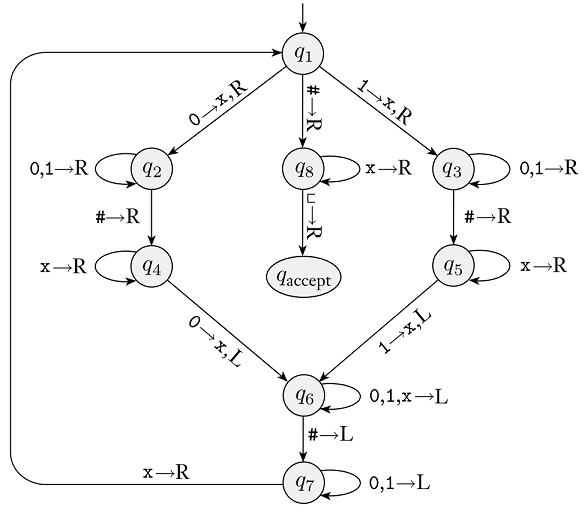

Homework 8
Last updated: Wed, 11 Nov 2026 10:28:18 -0500
Out: Thu Nov 05 12:30pm EST Due: Thu Nov 12 Sat Nov 14, 12:30pm EST
Note: Assignments are not officially "released" until—
and are subject to change without notice up to— the indicated "Out" date and time. If an assignment is posted early, students may look ahead but are responsible for ensuring that they are always working with the most recent version of the homework.
This assignment further explores context-free languages.
Homework Problems
CFLs and Concatenation (22 points)
Are Regular Languages CFLs? (22 points)
How a Turing Machine Computes (18 points)
README (2 point)
Total: 64 points
Submitting
Submit your solution to this assignment in Gradescope hw8. Please assign each page to the correct problem and make sure your solutions are legible.
A submission must also include a README containing the required information.
1 CFLs and Concatenation
Prove that the set of context-free languages are closed under the concatentation operation where concatenation is the "\circ" function on languages from lecture (or Sipser 1.23).
Your proof may only use PDAs. This means that your proof should define a function \textrm{Concat}_\textsf{PDA} : \textsf{PDA} \times \textsf{PDA} \rightarrow \textsf{PDA} such that for any PDAs P_1 and P_2, \textrm{LangOf}(\textrm{Concat}_\textsf{PDA}(P_1,P_2))=\textrm{LangOf}(P_1)\circ\textrm{LangOf}(P_2).
The proof should not, however, explicitly prove the above correctness statement for the \textrm{Concat}_\textsf{PDA} function. Instead you should use an Examples Table in the proof.
A correct solution must include the following components:
An explicitly stated IF-THEN Statement to Prove (please ask if there is any confusion here, if this part is not correct, then the rest of the problem will also not be correct)
A proof of the exact statement using the proper constructors and proof syntax. Any solutions that prove a different theorem or answer a different question will not receive credit.
A definition of \mathrm{Concat}_\textsf{PDA} separate from, but referenced from, the main proof
If the proof has a statement of the form "SOME-MACHINE recognizes SOME-LANGUAGE" (which it should), this must be justified with an Examples Table, separate from the main proof, that demonstrates the is machine correct with respect to the language. The table should include both examples in the language and not in the language, should cover all paths through the machine, and should think about corner cases. Also, if the proof does not involve one specific machine or language, then the Examples Table needs Justifications.
2 Are Regular Languages CFLs?
Prove that every regular language is a CFL.
Your proof may only use Regular Expressions and CFGs. This means that your proof should define a function \mathrm{CONVERT}_\textsf{RegExpr-CFG} : \textsf{RegExpr} \rightarrow \textsf{CFG} such that for any Regular Expression R, \textrm{LangOf}(\textrm{CONVERT}_\textsf{RegExpr-CFG}(R))=\textrm{LangOf}(R). Since Regular Expressions are recursively defined, then this function should be a recursive function.
You should not, however, explicitly prove the correctness of the \mathrm{CONVERT}_\textsf{RegExpr-CFG} function. Instead you should use an Examples Table in the proof.
A correct solution must include the following components:
An explicitly stated IF-THEN Statement to Prove (please ask if there is any confusion here, if this part is not correct, then the rest of the problem will also not be correct)
A proof of the exact statement using the proper constructors and proof syntax. Any solutions that prove a different theorem or answer a different question will not receive credit.
A definition of \mathrm{CONVERT}_\textsf{RegExpr-CFG} separate from the main proof
If the proof has a statement of the form "SOME-CFG describes SOME-LANGUAGE" (which it should), this must be justified with an Examples Table, separate from the main proof, that demonstrates the CFG is equivalent to the language. The table should include both examples in the language and not in the language, should cover all cases of regular expressions and CFG rules created. Since the problem does not involve one specific language, then the Examples Table needs Justifications. Here the justification should be the rule in the CFG that is used to generate the string.
3 How a Turing Machine Computes
Here is a Turing Machine state diagram from class (Figure 3.10 in the Sipser Textbook):

Remember that from each state, there are implicit transitions to an implicit q_{reject} state for any alphabet characters that are not explicitly shown. You may assume that transitions that go to q_{reject} do not change the tape contents and move the head Right. Also, if a transition does not have a "write" character in the diagram, then the tape contents stay the same (i.e., it "writes" the same character that was there).
Using this machine, answer the following questions (if your answer includes TM configurations, they must be the textual representation of a configuration).
What is the start configuration of this machine for an input string with characters \texttt{11111101010}?
Give two concrete strings accepted by this TM. Then, for each of these strings, give a sequence of configurations that starts in the start configuration and ends in a configuration containing q_{accept}. The two sequences of configurations that you submit must together use every (shown) transition in the machine. Make sure that the head is pointing at the correct character at each step.
Give two concrete strings rejected by this TM. Then, for each of these strings, give a sequence of configurations that starts in the start configuration and ends in a configuration containing q_{reject}.
When a Turing Machine is given an input string and begins computation on that string, what are the possible results of the computation?
For strings that should be in the language of a Turing Machine, what are the possible results of the computation? For strings that are not in the language of a Turing Machine, what are the possible results of the computation?